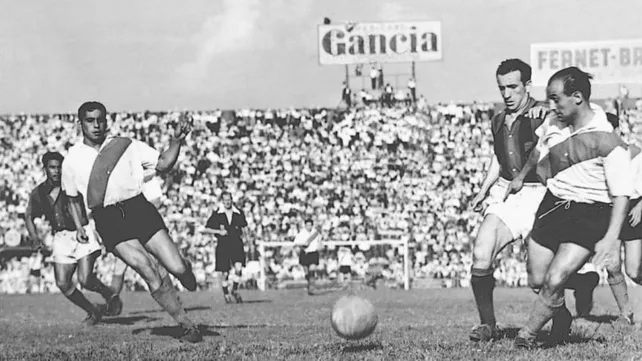

Futbol
El fútbol argentino comenzó a fines del siglo XIX con influencia británica y creció rápidamente. En 1893 se fundó la Asociación del Fútbol Argentino (AFA), y en 1931 se profesionalizó. Clubes como Boca Juniors y River Plate ganaron fama, y Argentina destacó internacionalmente con sus títulos en las Copas Mundiales de 1978, 1986 (liderada por Maradona) y 2022 (con Messi). Hoy, el fútbol es un símbolo nacional y su pasión se vive intensamente en todo el país.
Riquelme
Hola, soy Facu y hoy les vengo a contar la historia de mi jugador favorito.Juan Román Riquelme, nacido en 1978, es uno de los futbolistas más emblemáticos de Argentina. Comenzó su carrera en Argentinos Juniors y se consolidó como ídolo en Boca Juniors, donde brilló en su rol de enganche por su visión, técnica y precisión en los pases. Con Boca, Riquelme ganó múltiples títulos, incluyendo la Copa Libertadores en 2000, 2001 y 2007, dejando una huella imborrable en el club.

James Rodriguez
Yo soy Maxi y por mi parte James es mi jugador favorito.James Rodríguez, futbolista colombiano, nació en 1991 y se destacó desde joven por su talento. Su gran salto llegó en 2014, cuando brilló en la Copa Mundial de Brasil, ganando la Bota de Oro como máximo goleador del torneo y captando la atención mundial. Ese mismo año fue fichado por el Real Madrid, donde jugó varias temporadas y mostró su calidad en competiciones europeas. Ha pasado por clubes de élite como el Bayern de Múnich y el Everton. James es uno de los jugadores más importantes en la historia de Colombia y un referente por su técnica y visión de juego.